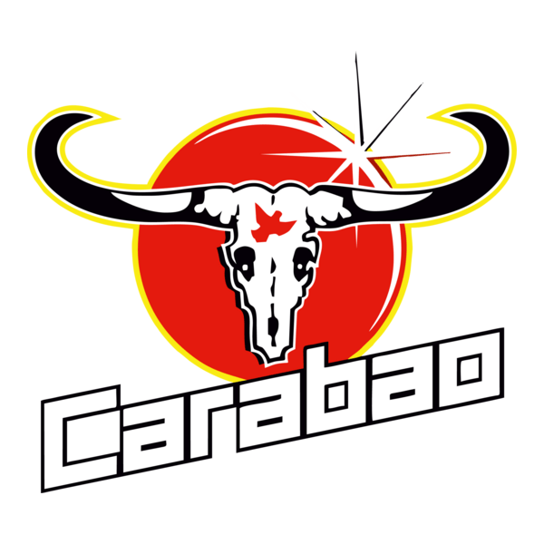

Carabao 7-a-side 2026 · Est. 1978Independent Football Club is more than a team — it's the heartbeat of the community. Navy and gold runs deep. This is your club.
Independent FC v Riverside Athletic · Independence Park
Membership and away travel — get closer to the action and support the club that supports the city.
Explore Membership